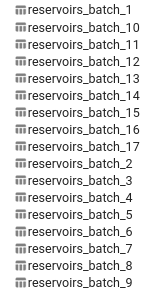

![]()
Have you ever found yourself pre-processing a local geodatabase, expecting to use the cleaned version on Google Earth Engine (GEE), only to get stuck when you try to export it as an asset? Most likely, you exceed the quota limit on GEE and saw this message: ee.ee_exception.EEException: Request payload size exceeds the limit: 10485760 bytes.
This limitation can be frustrating, especially when you want to maintain a Python-based workflow without resorting to manual uploads (i.e. saving your cleaned data to a .shp file and uploading it through the GEE Asset Manager in the Code Editor). In this tutorial, we’ll explore a programmatic solution to overcome GEE’s upload limit.
We’ll work on a approach that allows us to:
- Divide our data into manageable chunks.
- Export these batches as assets to GEE programmatically.
- Consolidate the uploaded batches into a single asset within GEE.
Setting Up the Environment
Before we dive into the main process, let’s set up our environment and import the necessary libraries and initialize GEE:
Read and pre-process the Data
For this tutorial, we’ll use a dataset of reservoirs polygons from the province of Alberta, Canada. This dataset is provided by the Alberta Biodiversity Monitoring Institute (ABMI) (ABMI 2023).
# Set the path to your geodatabase
path = str(os.getcwd()) + '/data_check/HFI2021.gdb'
# print(f'Reading data from: {path}')
# Read the specific layer from the geodatabase
reservoirs = gpd.read_file(path, layer = 'o01_Reservoirs_HFI_2021')
# Clean column names and select necessary columns
reservoirs = reservoirs.clean_names()
reservoirs = reservoirs[['feature_ty', 'geometry']]
print(reservoirs.head())
print(f'Total number of reservoirs: {len(reservoirs)}')
print(f'CRS: {reservoirs.crs}') feature_ty geometry
0 RESERVOIR MULTIPOLYGON (((807480.895 5943839.731, 807492...
1 RESERVOIR MULTIPOLYGON (((721133.55 6291704.327, 721119....
2 RESERVOIR MULTIPOLYGON (((716030.577 6294731.491, 715977...
3 RESERVOIR MULTIPOLYGON (((817815.182 5949939.667, 817857...
4 RESERVOIR MULTIPOLYGON (((388703.975 6217051.101, 388699...
Total number of reservoirs: 8101
CRS: EPSG:3400In this step, we read a specific layer from our dataset, cleaned the column names, and selected only the necessary columns. While additional pre-processing steps can be performed locally, in this case, we focus on selecting the specific data we need. Additionally, we print the number of observations included in the layer and the CRS.
The API Limit Challenge
If we try to export this entire dataset as it is to GEE at once, we’ll encounter the mentioned error due to the API’s payload size limit:
From this point forward, whenever you see ‘projects/ee-ronnyale/assets/’, be sure to replace it with your own GEE project path.
# This code will raise an error due to payload size
reservoirs_geojson = reservoirs.to_json()
reservoirs_fc = ee.FeatureCollection(json.loads(reservoirs_geojson))
exportTask = ee.batch.Export.table.toAsset(
collection = reservoirs_fc,
description = 'Cleaned Reservoirs Export',
assetId = 'projects/ee-ronnyale/assets/reservoirs'
)
exportTask.start()EEException: Request payload size exceeds the limit: 10485760 bytes.Exporting Data in Batches
To overcome the API rate limit, we’ll divide our data into manageable batches and upload them individually. This approach has a trade-off: it will create multiple assets in GEE, which we’ll need to merge later. Here’s how we’ll do it:
*How to know the batch size we should use? In my case it was about trial and error. I knew from the code above that I had 8101 observations, so batches of 500 seemed fine given that each observation contains one round-ish polygon. This could change if we have much more complicated polygons, which will be bigger in size (bytes not area) and hence, that extra information will force us to downsize the number of observations per each batch.
- Define a batch size*
- Calculate the number of batches needed
- Loop through the data, creating and uploading each batch
- Assign a unique ID to each batch for easy identification
One crucial step: before uploading, we’ll change the CRS to epsg=4326, which is used by GEE. This prevents distortion of the polygons when working in GEE.
# Define the batch size
batch_size = 500
# Calculate the number of batches needed
num_batches = math.ceil(len(reservoirs) / batch_size)
for i, batch in enumerate(reservoirs.groupby(reservoirs.index // batch_size)):
# Reproject to WGS 84 (EPSG:4326)
batch = batch[1].to_crs(epsg = 4326)
# Convert to GeoJSON
batch_geojson = batch.to_json()
# Load GeoJSON as an Earth Engine FeatureCollection
batch_fc = ee.FeatureCollection(json.loads(batch_geojson))
# Define a unique asset ID for each batch
batch_asset_id = f'projects/ee-ronnyale/assets/reservoirs_batch_{i+1}'
# Export the batch to GEE
print(f'Exporting the batch: {batch_asset_id}')
exportTask = ee.batch.Export.table.toAsset(
collection = batch_fc,
description = f'Reservoirs Batch {i+1}',
assetId = batch_asset_id
)
# Start the export task
exportTask.start()Exporting the batch: projects/ee-ronnyale/assets/reservoirs_batch_1
Exporting the batch: projects/ee-ronnyale/assets/reservoirs_batch_2
Exporting the batch: projects/ee-ronnyale/assets/reservoirs_batch_3
Exporting the batch: projects/ee-ronnyale/assets/reservoirs_batch_4
Exporting the batch: projects/ee-ronnyale/assets/reservoirs_batch_5
Exporting the batch: projects/ee-ronnyale/assets/reservoirs_batch_6
Exporting the batch: projects/ee-ronnyale/assets/reservoirs_batch_7
Exporting the batch: projects/ee-ronnyale/assets/reservoirs_batch_8
Exporting the batch: projects/ee-ronnyale/assets/reservoirs_batch_9
Exporting the batch: projects/ee-ronnyale/assets/reservoirs_batch_10
Exporting the batch: projects/ee-ronnyale/assets/reservoirs_batch_11
Exporting the batch: projects/ee-ronnyale/assets/reservoirs_batch_12
Exporting the batch: projects/ee-ronnyale/assets/reservoirs_batch_13
Exporting the batch: projects/ee-ronnyale/assets/reservoirs_batch_14
Exporting the batch: projects/ee-ronnyale/assets/reservoirs_batch_15
Exporting the batch: projects/ee-ronnyale/assets/reservoirs_batch_16
Exporting the batch: projects/ee-ronnyale/assets/reservoirs_batch_17On your GEE assets you should be able to see something like:

Merging Assets in GEE
Now that we have all our data in GEE as separate assets, we need to merge them into a single dataset. First, we’ll create a list of all the batches already created. We’ll loop through the total number of batches to get the unique batch IDs in a list. Afterward, iterate through each batch and merge them into a single object. This object will exist in GEE but it’s not saved. That’s why we’ll need to export it as the new merged asset.
# Create a list of all batch asset IDs
batch_asset_ids = [f'projects/ee-ronnyale/assets/reservoirs_batch_{i+1}' for i in range(num_batches)]
# Merge all batches into a single FeatureCollection
reservoirs_fc = ee.FeatureCollection(batch_asset_ids[0])
for asset_id in batch_asset_ids[1:]:
batch_fc = ee.FeatureCollection(asset_id)
reservoirs_fc = reservoirs_fc.merge(batch_fc)
print(f'Total number of features in merged collection: {reservoirs_fc.size().getInfo()}')
# Export the merged collection as a new asset
exportTask = ee.batch.Export.table.toAsset(
collection = reservoirs_fc,
description = 'Merged Reservoirs',
assetId = 'projects/ee-ronnyale/assets/reservoirs_merged'
)
exportTask.start()
print("Merged asset export task started. Check your GEE Tasks tab for progress.")Total number of features in merged collection: 8101
Merged asset export task started. Check your GEE Tasks tab for progress.I like to print the final number of observations, so I can be sure that all the original observations are there. This could be translated into an automated test for the project.
This step creates a new single asset that contains all our data. We can use it later in our analysis as a single FeatureCollection.
Cleaning Up: Removing Individual Assets
Finally, let’s clean up by removing the individual batch assets, keeping only our merged dataset:
for asset_id in batch_asset_ids:
try:
ee.data.deleteAsset(asset_id)
print(f'Successfully deleted: {asset_id}')
except Exception as e:
print(f'Failed to delete {asset_id}: {e}')
print("Cleanup complete. Check your GEE Assets to confirm.")Successfully deleted: projects/ee-ronnyale/assets/reservoirs_batch_1
Successfully deleted: projects/ee-ronnyale/assets/reservoirs_batch_2
Successfully deleted: projects/ee-ronnyale/assets/reservoirs_batch_3
Successfully deleted: projects/ee-ronnyale/assets/reservoirs_batch_4
Successfully deleted: projects/ee-ronnyale/assets/reservoirs_batch_5
Successfully deleted: projects/ee-ronnyale/assets/reservoirs_batch_6
Successfully deleted: projects/ee-ronnyale/assets/reservoirs_batch_7
Successfully deleted: projects/ee-ronnyale/assets/reservoirs_batch_8
Successfully deleted: projects/ee-ronnyale/assets/reservoirs_batch_9
Successfully deleted: projects/ee-ronnyale/assets/reservoirs_batch_10
Successfully deleted: projects/ee-ronnyale/assets/reservoirs_batch_11
Successfully deleted: projects/ee-ronnyale/assets/reservoirs_batch_12
Successfully deleted: projects/ee-ronnyale/assets/reservoirs_batch_13
Successfully deleted: projects/ee-ronnyale/assets/reservoirs_batch_14
Successfully deleted: projects/ee-ronnyale/assets/reservoirs_batch_15
Successfully deleted: projects/ee-ronnyale/assets/reservoirs_batch_16
Successfully deleted: projects/ee-ronnyale/assets/reservoirs_batch_17
Cleanup complete. Check your GEE Assets to confirm.And we are done! We were able to export from our local computer the selected layer and all it’s observations as an asset to GEE. Be aware that bigger datasets can take a lot of time uploading!
References
Reuse
Citation
@online{a. hernandez mora2024,
author = {A. Hernandez Mora, Ronny},
title = {A {Step-by-Step} {Guide} to {Exporting} “{Large}” {Datasets}
to {Google} {Earth} {Engine} via {Python}},
date = {2024-09-09},
url = {https://ronnyale.com/posts/2024-08-28-batches_gee},
langid = {en}
}